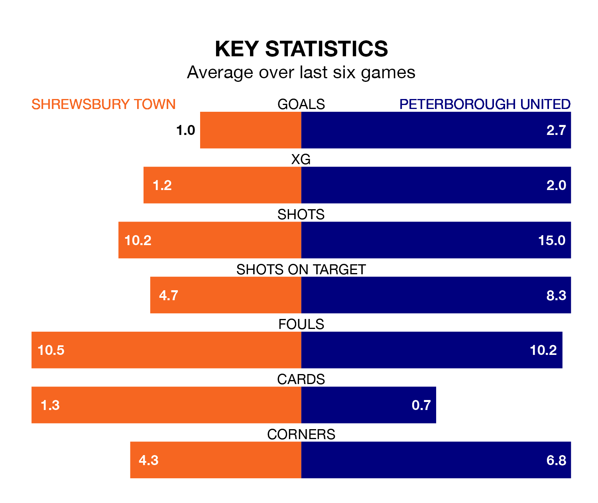

Peterborough United are strong favourites to take all three points despite Shrewsbury Town's home advantage in Saturday's match at the Croud Meadow.
*Betting Company* are offering odds of 1.59 on Peterborough sealing the win, with the visitors sitting second in EFL League One table.
Shrewsbury, who are 14th in the league and 14 points behind the Posh, are priced at 4.34 to win. A draw is set at 3.67.
With 41 goals in 21 games so far this season, Peterborough are the league's highest scorers with 2.0 goals per game. And they are conceding fewer than average, letting in 20 goals at a rate of 1.0 per game.
Shrewsbury, meanwhile, are below average scorers, with 0.6 goals per game, compared to a league average of 1.3. They have conceded 1.4 goals per game.
With Nicholas Bilokapic between the sticks, United can rely on one of the league's safest pair of hands. He has kept 10 clean sheets in his 21 appearances this season, and only one other 'keeper – Portsmouth's Will Norris – has been able to prevent the opposition scoring on more occasions in EFL League One.
In Town's net, Marko Maroši has seven clean sheets in 22 games. He has conceded a goal every 79 minutes, 30% more often than the 105 minutes between goals for Bilokapic.
The Shrews are in mixed form in EFL League One, with three wins and a draw from their last six games.
With four wins and a draw over that period, the Posh's form is better – they have taken 13 points from 18, compared to the home side's 10.
In the last five years, Shrewsbury and Peterborough have played each other on seven occasions. Shrewsbury won four of them and Peterborough three.
On average, the Shrews scored 1.4 goals and the Posh 1.7 in those matches.
Their last meeting was on April 7, when Peterborough won 3-0 away.
Shrewsbury's last match was on December 16, a 3-0 loss against Portsmouth.
Peterborough beat Fleetwood Town 1-0 last time out, also on December 16, with Archie Collins on the scoresheet.
Saturday's match will be refereed by Martin Coy, who has taken charge of five EFL League One games so far this season, issuing two red cards and booking 16 players. He has awarded four penalties.
He is yet to oversee a match featuring either Shrewsbury or Peterborough this season.
Updated: 15:16, 21/12/23